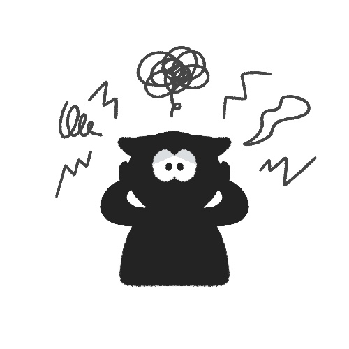
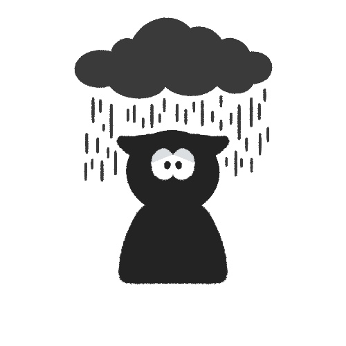
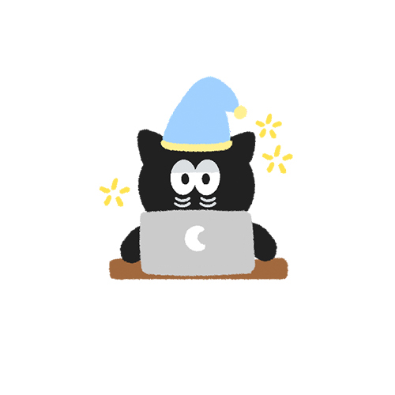
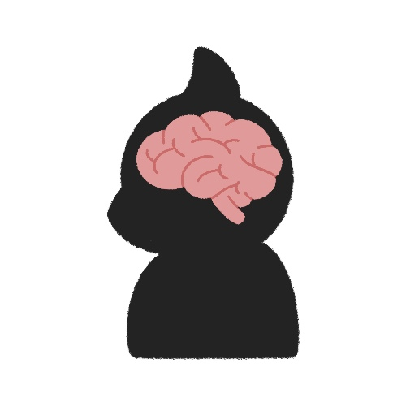
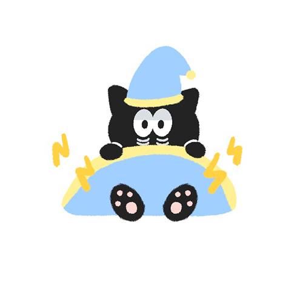
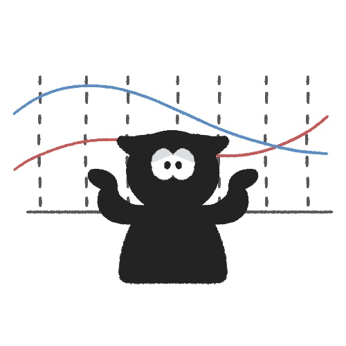
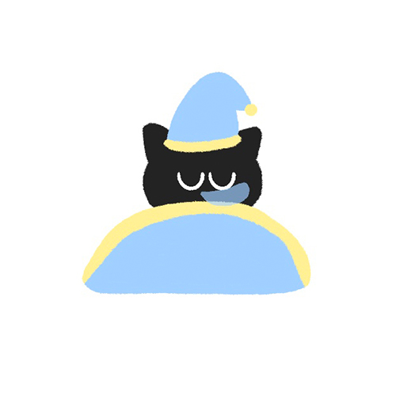
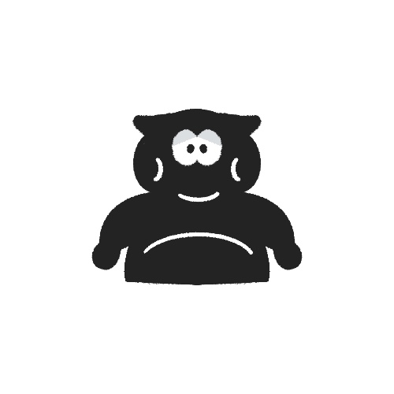
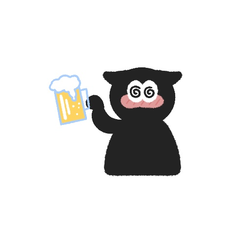

불면증 원인
 
- 1. 수면 리듬이 약한 사람이 스트레스를 겪어 수면리듬이 악화 되는 경우
- 2. 우울증, 불안장애 및 기타 정신질환이 있는 경우
불면증 진단
1. 평소의 수면패턴을 알아보기 위한
수면일지자신의 수면 패턴 기록
쓰기2. 동반되는 수면장애를 찾기 위하여
피츠버그수면척도수면의 질 지수 설문지
시행3. 6개월 이상 지속되는 만성불면증으로 자다가 깨는 증상이 주가 되거나 코골이가 동반되어 있는 경우에는
수면다원검사수면 중에 발생하는 비정상적인 상태를 진단하려고 여러 기구를 이용하여 수면 중 상태를 기록, 분석하는 검사
를 시행4. 불안증이나 우울증을 평가하기 위한
자가설문지스트레스 및 우울증 지수 설문지
시행불면증 치료
1. 불면증 원인 요소 제거
2. 쾌적한 수면을 위해 올바른 수면습관 갖기
3. 약물치료, 인지행동치료, 이완 요법, 자극 조절법 등을 시행
4.
수면일지잠자리에 드는 시간, 일어나는 시간, 카페인이 함유된 음료를 마신 것, 하루 동안의 운동량 등을 기록
적기불면증 예방법
1. 매일 같은 시각에 일어나기
2. 평소 하루에 침대에서 보내는 시간 제한하기
3. 카페인, 니코틴, 알코올과 같은 중추신경계를 자극하는 약물 제한하기
4. 치료로서 낮음을 자는 경우를 제외하고는 낮잠은 피하기
5. 신체운동을 하고 저녁에 자극적 행동은 피하기
6. 잠자기 전 따뜻한 물로 20분 정도 샤워하기
7. 잠자기 전 과식은 피하기
8. 안락한 수면 조건 유지하기
기면증이란?
잠에서 깨어나지 못해 낮에 과도한 졸음을 호소하는 상태

기면증 원인

원인은 의학적으로 명확히 밝혀지지는 않았다.
가장 유력한 설은 뇌에 있는
하이포크레틴사람을 깨어있게 하는 호르몬
부족으로 보고있다.* 수면시간이 충분하다 -> 각성물질 분비 No -> 잠을 계속 잔다
기면증 진단
어떤 일에 집중할 때 졸음이 마구 쏟아진다.
밤에 잠을 자도 낮에 계속 졸음이 느껴진다.
한창 활동중일 때도 졸음 때문에 활동을 지속하기 힘들다.
깨어있는 상태를 유지하기 어렵다.
이러한 증상들이 3개월 이상 지속되면 기면증을 의심해 볼 수 있다!
진료 방법
1. 1박 2일 동안 수면검사실에서야간수면다원검사수면 중에 발생하는 비정상적인 상태를 진단하려고 여러 기구를 이용하여 수면 중 상태를 기록, 분석하는 검사
와 주간검사를 연이어 약 22시간 동안 시행2. 야간수면다원검사에서 낮 동안 졸음을 초래할 만한 수면장애가 없으며, 객관적으로 확인된 심한 주간졸음과 렘수면 이상 소견을 주간검사로 진단
기면증 치료
1. 수면 검사실에서
수면다원검사수면 중에 발생하는 비정상적인 상태를 진단하려고 여러 기구를 이용하여 수면 중 상태를 기록, 분석하는 검사
통해 진단2. 장기간 사용할 수 있는 각성제나 탈력발작을 억제하는 항우울제 계통의 약물치료
3. 생활습관 교정, 심리 상담, 그리고 약물 내성을 줄이기 위한 통합적 치료
기면증 예방법
2. 매일 같은 시간에 잠자리에 들고 같은 시간에 깨기
3. 잠자리에서 스마트폰을 보는 습관 버리기
4. 점심시간에 잠깐 낮잠 자기
하지불안증후군이란?
수면부족을 초래하는 수면장애

하지불안증후군 원인


1. 연구자들은 뇌의 도파민 시스템의 불균형이 관련된 것으로 추측
2. 일찍 발병한 하지불안 증후군의 경우 절반 정도에서 유전적 경향
3. 스트레스
4. 임신이나 호르몬 변화
5. 철분결핍
6. 종종 항우울제, 소화제들의 약물 부작용
하지불안증후군 진단
다리가 불편하고 이상감각 없이도 다리를 움직이고 싶은 충동이 나타난다.
쉬거나 움직이지 않을 때 움직이고자하는 충동과 불편함이 시작되거나 심해진다.
불쾌한 감각이 걷거나 스트레칭과 같은 운동에 의해 부분적이나 거의 완화된다.
감각이 낮보다는 저녁이나 밤에 악화되거나 저녁이나 밤에만 나타난다.
다리가 저리고, 벌레가 기어다니고 쑤시고 타는 느낌, 전류가 흐르는 느낌이 든다.
하지불안증후군 치료
1. 철분제 섭취
2. 잠자는 시간을 일정하게 유지
3. 불필요하게 자꾸 눕는 습관 고치기
4. 과다 카페인 섭취, 과음 피하기
5. 스트레스 받지 말기
6. 잠들기 전 요가나 명상 같은 이환 요법하기
7. 낮 동안 다리를 적절하게 움직이기
8. 증상이 나타날 경우에는 더운찜질 해주기
하지불안증후군 예방법
1. 자주 스트레칭 하기
2. 스트레스 받지 않기
3. 적절한 운동하기
4. 규칙적인 수면 습관 갖기
5. 카페인이 들어간 식음료 삼가하기
코골이 및 수면무호흡이란?
코골이가 있는 사람의 75%는 수면 중에 호흡이 멈추는 수면무호흡증을 동반

코골이 및 수면무호흡 원인
 
2. 음주 및 흡연
3. 상기도의 공간이 좁아지는 해부학적 이상
4. 턱이 비정상적으로 작거나 목이 짧고 굵은 사람
5. 인두의 기도 확장근의 힘이 횡격막에 의한 흉곽 내 음압을 이겨내지 못할 때
6. 소아는 편도 비대와 아데노이드 비대 때문
코골이 및 수면무호흡 진단
깊은 잠을 자지 못하고, 낮 동안 피로감, 자도 잔 것 같지 않은 느낌이 든다.
아침 두통, 무기력감, 중력과 기억력 저하, 우울감을 느낀다.
야간 빈뇨, 식도역류, 과다 발한, 심한 잠꼬대, 몽유병 등이 나타난다.
상체를 일으켜 반쯤 앉은 자세를 취하며 호흡을 하려다 갑자기 쓰러진다.
입으로 숨을 쉬는데 목 안에 무엇인가 막혀 가까스로 숨을 쉬는 모습을 보인다.
호흡이 힘들어 가슴을 헐떡이며 땀을 많이 흘리기도 한다.
주간 졸림증, 성격 변화 등 이산화탄소 축적으로 인한 심한 두통이 나타난다.
학습 부진이나 발달 지연, 입으로 숨을 쉬게 되어 말처럼 얼굴이 길어졌다.
진료 방법
1. 우선 병력으로 진단하게 되는데, 본인이나 배우자, 또는 가족들을 통해 증상을 듣고 진단2. 주간에 얼마나 졸리는지에 대한 문진을 통해서도 코골이나 무호흡의 심한 정도를 파악
3. 신체검진으로 체중이나 BMI 지수를 측정하거나 외양 특히 얼굴과 목의 모양을 관찰하고 비강, 구강, 인두, 후두의 검진을 병행하여 주된 유발 원인을 파악
4. 정확한 수면의 평가를 위해서는
수면다원검사수면 중에 발생하는 비정상적인 상태를 진단하려고 여러 기구를 이용하여 수면 중 상태를 기록, 분석하는 검사
를 시행5. 병원에서 하룻밤을 자면서 수면의 전 과정을 조사
6. 자는 동안 호흡, 맥박, 움직임, 코골이, 혈중 산소 포화도, 뇌파 등을 측정하고, 그 외에 기도의 폐쇄 부위를 파악하기 위한 검사 등을 동시에 시행
7. 기도의 폐쇄 부위를 확인하기 위해서 비인두 섬유경을 이용하여 인두부에서 어느 부위가 막히는지를 직접 관찰하거나 방사선 투시 검사를 통해 확인
8. 두개골 계측 방사선 검사로 뼈 부분의 해부학적 지표들을 파악하여 뼈의 구조적인 문제를 확인
9.
수면다원검사수면 중에 발생하는 비정상적인 상태를 진단하려고 여러 기구를 이용하여 수면 중 상태를 기록, 분석하는 검사
시에는 코를 통하여 관을 거치하고 수면의 전 과정을 통해 어느 부위가 막히는지 추적하는 검사
코골이 및 수면무호흡 치료
비수술적인 방법
- 양압기를 사용하여 수면 중 공기를 지속적으로 기도로 공급해 인두부 연조직의 허탈을 방지
- 구강 내 장치를 통해 혀가 목 뒤로 처지는 것을 방지
- 옆으로 잠자기
- 체중 감량
- 금주 및 금연
수술적인 방법
- 비강수술(비중격 만곡 및 하비갑개 비후에 대한 교정술)
- 인두부 수술(편도 및 구인두의 점막을 절제하는 구개인두 성형술, 고주파 온열 구개술)
- 설부 축소수술
- 두경부 골격수술(이설근전진술과 설골근절개술, 양측 상악전진술)
코골이 및 수면무호흡 예방법
1. 체중 조절
2. 금주 및 금연
3. 취침시간의 온도 조절하기
4. 옆으로 누워자는 습관 및 낮은 베개 배고 자기
5. 규칙적인 운동하기